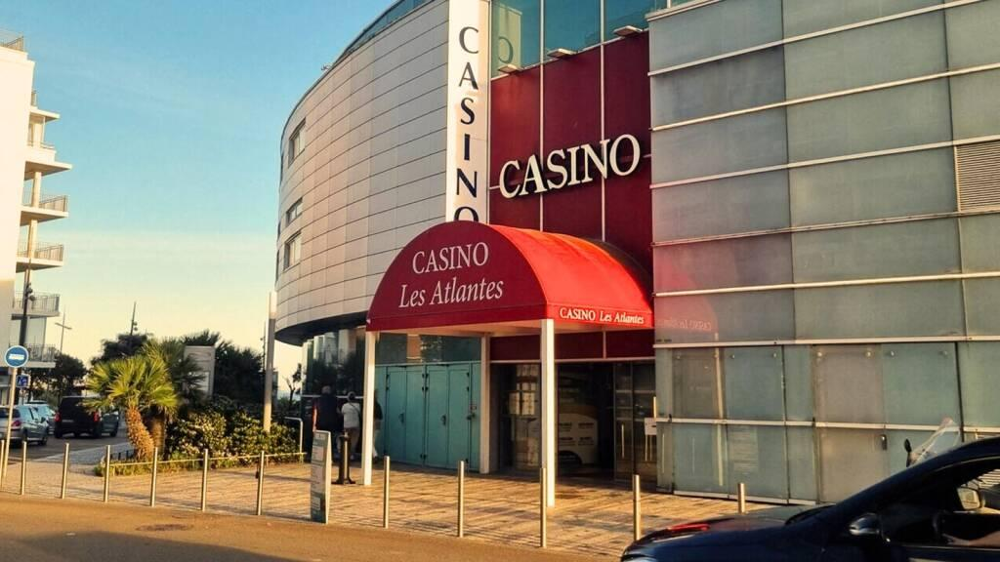

Un lieu de divertissement au cœur du Remblai, dans un environnement emblématique des Sables-d'Olonne.
Situé face à l'océan, le Casino des Atlantes propose une expérience complète autour des jeux, de la restauration et des animations.
Le casino accueille différents espaces : machines à sous, jeux électroniques, jeux de table, restauration et opérations d'animation.

Les grandes étapes historiques reprises de la présentation actuelle du projet.
Le Grand Casino de la Plage est construit à l'extrémité du Remblai des Sables-d'Olonne et devient un lieu incontournable de la station.
Le Casino de la Plage accueille au fil des années spectacles, salons, danse, jeux et différentes activités destinées aux visiteurs.
Le bâtiment connaît une période mouvementée pendant la Seconde Guerre mondiale avant d'être finalement détruit.
Après le rachat du site par la Ville, l'établissement retrouve son activité et continue de participer à l'attractivité touristique des Sables-d'Olonne.
Le casino s'inscrit aujourd'hui dans le complexe des Atlantes et poursuit son activité face à l'océan.